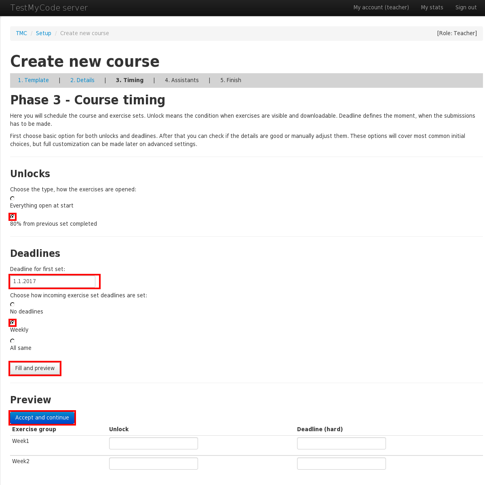
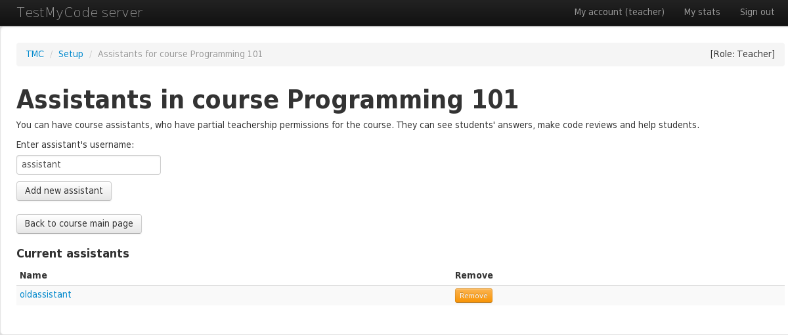
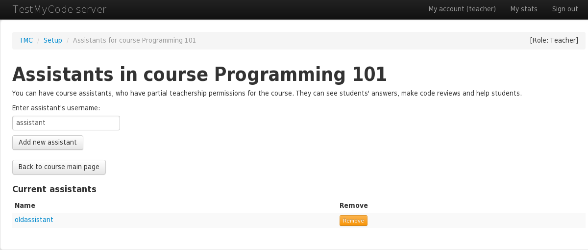
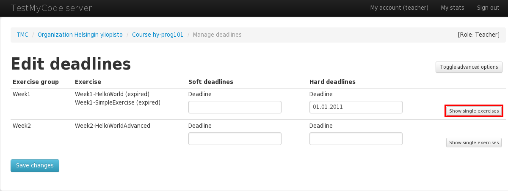
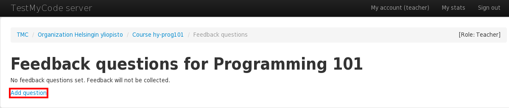
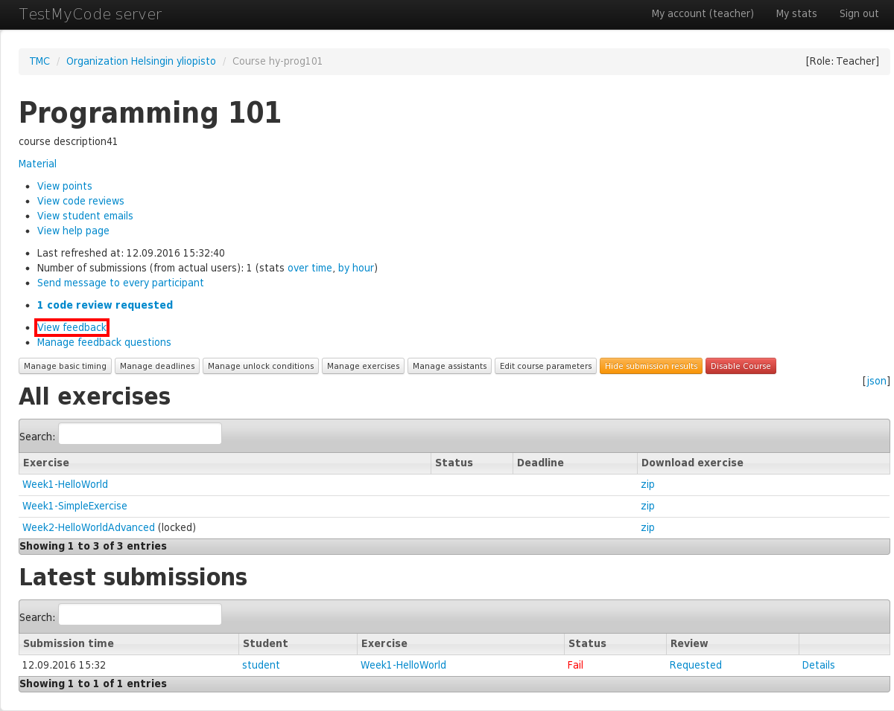
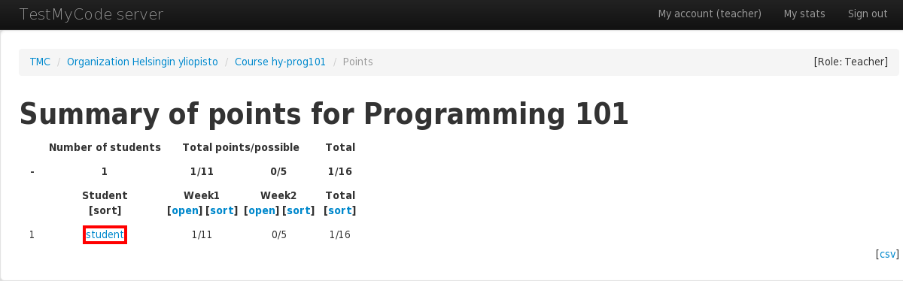
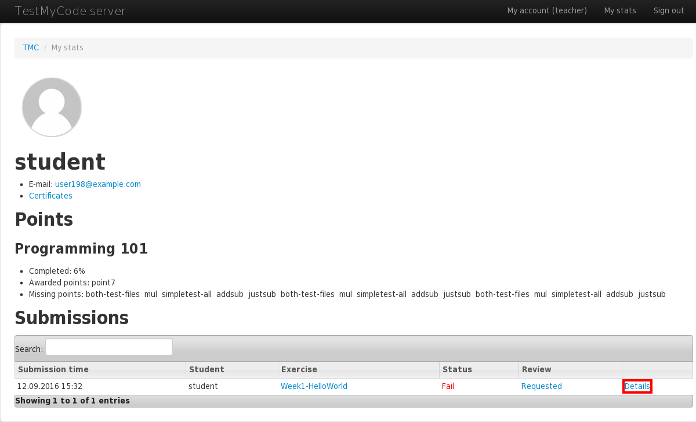

Teacher is a user that controls his own organization. Organization can have several teachers, and they all can create and manage courses. One teacher can also belong to several organizations.
As a teacher, you can create fully functional courses from available templates. You can customize exercise sets, their deadlines and unlock conditions etc. Courses can also have customized feedback questions which can be asked from students after successful submission.
Courses can also have course assistants, who have partial teachership permissions for that course only, not for all organization's courses.
When you are starting to use TMC for your own teaching first time, first step is to create your own organization. If your organization is big, it's good to check from the front page if the organization already exists in the system. If it is already found, you should contact the other teachers and ask them to promote you as teacher in the existing organization.
First you have to be logged in the system normally. If needed, click the Sign up link and create your personal account. When logged in, go to url /org/new in the TMC system, (for example http://tmc.mooc.fi/org/new).

You will then be presented with a form with following fields:
Contact details for tmc administrative purposes. These are not shown publicly.
When you have successfully created organization, it is ready for use. Only few functionalities, like model answers, are not available until administrators have verified the organization. When logged in, your organization is listed separately on TMC front page. Verified organizations are also publicly listed.

As a teacher, you can list, add and remove teachers in your organization. From the organization front page, you can find link to list all the teachers. Remember that all teachers in the organization have same access rights as you, so be careful when adding new teachers.

To recruit a new teacher, you will have to know the teachers's exact username in TMC system. Type the username then click 'Add a new teacher'.

You can also remove existing teachers easily by clicking 'Remove' buttons.

TMC offers fully working course templates, from which you can create your own courses. Courses will include teaching material and set of exercises. You can customize your own course by managing susbmission deadlines, exercise unlock conditions, feedback answers etc.
From organization's front page, click 'Create New Course'

You will see a list of all the course templates TMC has to offer. If needed, take a look at the course description and course material, to choose which course is suitable for your needs. Click 'Create Course' button on the course that you want.


On the following form the fields will be prefilled with template defaults. You may change these fields to suit your needs.
Finally click the 'Add Course' button. It might take some time while the TMC populates the new course with exercices.
After the course has been created, you will get message announcing that. Now the course should now be available for students to submit their solutions to exercises. TMC will show a help page to get you started with teaching the course. Click 'view status page' to return to course's front page, where you can manage course details.
Here you may see submissions sent to any exercises in this course, view model solutions, make code reviews etc. You may also access course page from organization's page.
Course main page is divided into few sections. First, you have the general management part, which contains links to exercise, deadline, unlock, assistant and course option management. After that, there is the exercise list, and at the bottom, you can find student's submissions. Remember, that as a teacher (or assistant), you will see submissions from all the students, while students see only their own submissions.

You can edit the initially entered course information plus some other things by clicking the 'Edit course parameters' button.
Technical course name is permanent, and it can't be edited.

If you want to use an external point awarding system, you can enter its URL to the 'Custom points URL' field. You can also use a template
string that will generate the URL dynamically. For example, http://my-custom-points.io/%{user} would show as
http://my-custom-points.io/MyUsername when viewed by user MyUsername
If you want to use an external point awarding system, you can enter its URL to the 'External scoreboard URL' field. You can also use a template
string that will generate the URL dynamically. For example, http://my-points.io/%{user} would show as
http://my-points.io/MyUsername when viewed by user MyUsername
Created course may be disabled so that it won't accept submissions. You might want to do this if you're not satisified with your course and wish to start a new one, if you want to configure your course without worrying about students using your course, or if you want to force students to take a vacation. Disabled courses can be enabled at a later time.
Simply click 'Disable Course' link to disable course.
Click 'Enable Course' link to enable it again.

Course assistants have teacher permissions for single course, not for whole organization. You can add course assistants by going to course page and clicking 'Manage assistants' button.

Adding new course assistants works same way as adding new teacher, so you need to enter assistant's username.

To control course progression, each exercise and exercise group may be configured with deadlines and unlock conditions. First, it's important to understand the concept of deadline and unlock condition.

There are 2 kind of deadlines. Soft deadline is a deadline which is shown for students, but TMC will accept and process submissions even after that, only flagging that it's submitted late. Hard deadline is a strict deadline, so that when it is passed, TMC refuses to process any submissions.
Choosing the deadlines depends on your needs. For example, you can set soft deadlines for every friday evening, and hard deadline for sunday evenings, to give students few days extra time, if thay fail to submit in time. Then you can take into account the late submissions in the grading, if needed.
Deadlines can be either common time-based for all, or they can be unique unlock-based, so that student will always have exactly one week to submit. Then the exact deadline time will depend on the time where the exercise became available for the student.
Unlock condition is a condition, which determines when the exercise is available for the student. Two most common cases are fixed date, or some percentage of previous exercises completed. So unlock condition can be common for all, or unique for every student, based on their progress.
To setup deadlines for the exercises, click the 'Manage deadlines' button from the course's front page.
 

Common deadlines are configured by date or date-time. TMC understands multiple formats, for example:
Another way to setup deadlines is to use unique unlock-based deadlines. It means that deadline for each
student is based on the time they unlocked the exercise (see Unlock conditions).
For example, to give students 2 weeks to complete an exercise after it becomes available, set the deadline to
unlock + 2 weeks.
All possible valuers for unlock-based deadline are:
unlock + <N> [minute[s]|hour[s]|day[s]|week[s]|month[s]|year[s]].
To edit unlock-based deadlines, advanced options must be enabled by clicking the button in the top right corner of the page. If both date-based and unlock-based deadlines are enabled for the same exercise, the one which expires first wil be used.
Exercises are organized into pre-defined groups. By default, deadlines are set per group, so that all exercices in the current group will get the same deadline. If you need more customization, you can click 'Show single exercises', and then the form allows to set deadlines at single exercise level.


If the exercises in a group have differing deadlines, the group deadline input fields will be disabled and show 'various', so you can't accidentally override exercise specific settings.
If you want to edit the deadlines for the whole group again, you need to change the single deadlines so they all match within the group, or you can reset them by clicking 'Clear single deadlines'.
When you are done with the settings, remember to click 'Save changes' at the bottom of the page.
After creating a course from template, the deadlines may already be defined depending on the course template configuration.
If exercise or exercise group has an unlock condition attached to it and it has not passed yet, exercise will not accept submissions. If there are no unlocks set, exercise is always active.
Unlock conditions can be set by clicking 'Manage unlock conditions' in the course page.
Unlock conditions may be set for each exercise group separately. You can add multiple unlock conditions for the same exercise group by clicking 'Add a condition'. If multiple conditions are defined, all of them must be true before the exercise is unlocked.
The conditions that can be used are:
exercise [group] <exercise-or-group>point[s] <list-of-point-names><N>% [in|of|from] <exercise-or-group><N> point[s] <exercise-or-group><N> exercise[s] [in|of|from] <exercise-or-group><date-or-datetime><exercise-or-group> is the exact name for the exercise.
Some most common examples:
1.9.2016
80% from exercice-group-X
exercise important-exercise
Code review is a process, where course teacher or assistant looks the code in the submitted answer, and reviews it with commenting. Some exercises require code review to be completed, and students can also request code review if they want.
If there are any unreviewed requests, course front page has link 'n code view requested'. You can start review process by clicking that link. Also submission list on the bottom of the page shows individually if submission still requires review.

Review page shows all submission which still require review. Click the 'Requested' link for the submission which you want to review.
On the actual review screen, you can see studens answer code at the bottom of the page. Showing test results can be toggled by clicking 'Test results'. When you have taken look at the code, click 'Start code review' to start writing your actual review feedback.

Write you review text in the textarea. If you want to notify the student by email, you can check 'Notify by e-mail' checkbox. When you are ready, click 'Save review', and review process is done.

Every course can have feedback questions, which are asked after successful submission. Question can be either free text answer or number value for selected range. For example, numeric questions can be "How difficult was this exercise? (1-5)", and text question "What problems you had in this exercise?".
Questions can be configured by clicking 'Manage feedback questions' from course front page.
New question can be added by clicking 'Add question'.
First enter the actual question text and short title, which can be shown on result view. If you want to create free text question, choose 'Text area' as question type.

If you want to create question with number value answers, for example likert scale for statistical purposes, you can choose 'Integer range' option instead. New input fiels for minimum and maximum values are shown.
When questions are made, you can adjust their order with 'Up' and 'Down' options. Question can be removed by clicking 'Delete'.

After students have answered to questions, the answers can be viewed by clicking 'View feedback' from course main page.
Students current progress can be check from the points page. It is accessible through 'View points' link from the course front page.

This page show summary of all students and exercise groups. If you want to see single student's data, click his username.
On the student's page you can see summary of his progress in all courses, for example how many percentages of all exercises have been completed. At the bottom of the page there's list of his submission history. If you want to check some single submission data, you can click 'Details' link.

On the submission details page you can see all relevant data to submission, including student's answers, test results, and suggested solution. You can also rerun submission and start code review.
From the organization front page you can view some statistics by clicking link 'Show statistics'.
Statistics page lists information about participants and completed exercises for all your organization's courses.

TMC has support for creating fully customized own courses from scratch, without using offered course templates. This option might be disabled on the running TMC server, and may not be supported. Normally you don't need to bother with that, and it is for advanced use only. Guide for custom courses tells the details about the fully custom courses with their own exercices etc.